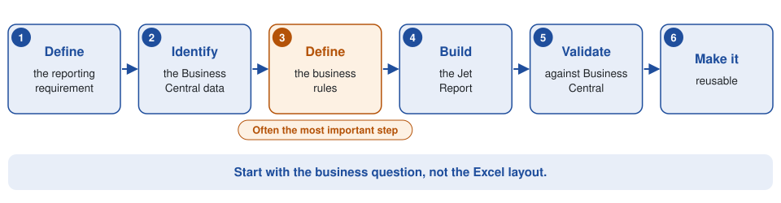
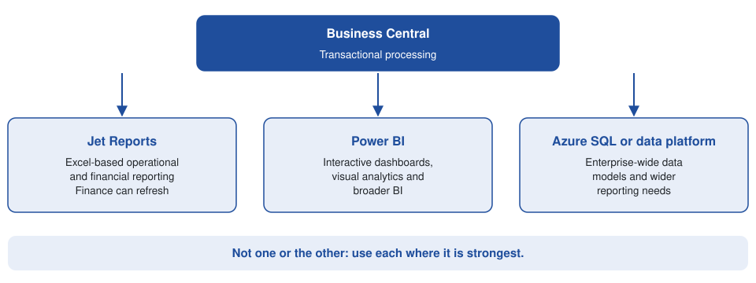

How to Create a Custom Jet Report in Business Central
If your organisation uses Microsoft Dynamics 365 Business Central, there is a good chance that Finance or management will eventually ask for a report that isn’t available out of the box: a management P&L by dimension, a detailed sales analysis, a customer profitability report, a budget-versus-actual report or a monthly pack that combines several areas of Business Central. This is where Jet Reports can be particularly useful.
Jet Reports lets users build Excel-based reports on Business Central data, including information from different modules, dimensions, companies and, where supported, third-party solutions. Jet Global lists Ireland among the countries supported for Business Central (Jet Global Support).
What is a Jet Report?
A Jet Report is an Excel report that retrieves information from your ERP system and presents it in a format users can refresh and reuse. Instead of exporting data from Business Central by hand every month, a well-designed Jet Report gives you a repeatable reporting process. A Finance team might build a monthly report containing:
- General ledger transactions, revenue and cost of sales
- Departmental expenditure and budget figures
- Customer and vendor information
- Business Central dimensions and multiple companies
- Period comparisons
The report can then be refreshed whenever the underlying Business Central data changes.
Why use Jet Reports with Business Central?
Business Central holds a large amount of financial and operational information, but the standard reports don’t necessarily match the way every organisation wants to analyse it. The problem is often not the availability of data. The problem is getting the data into the right business report.
A Finance Director might ask for actual vs budget by department, month and account, with a year-to-date comparison and a variance percentage. A standard report may not present the information in exactly that format. A custom Jet Report can be designed around the organisation’s reporting requirements.
Examples of custom Jet Reports
1. Management P&L
A management P&L can be designed around the organisation’s chart of accounts and dimensions. For example:
| Report line | Analysis |
|---|---|
| Revenue | By department |
| Cost of sales | By department |
| Operating costs | By cost centre |
| EBITDA | Monthly and YTD |
| Budget | Actual vs budget |
| Prior year | Current vs previous year |
This creates a reusable management reporting pack, rather than requiring Finance to manipulate exported Excel data every month.
2. Budget vs actual
Budget reporting is one of the most common reasons organisations need custom ERP reports. A custom Jet Report can combine actual ledger values with budget information and calculate:
- Actual, budget, variance and variance %
- Month and year-to-date
- Full-year budget and remaining budget
The report can then be structured around the dimensions management actually uses.
3. Dimension reporting
Business Central dimensions are a powerful way of analysing financial information. An organisation might use dimensions for department, cost centre, project, location, programme or funding source. A custom report can use them to produce management information that the standard chart of accounts alone doesn’t easily show.
4. Sales reporting
A sales report might combine customer, item, salesperson, quantity, revenue, cost, margin, location and date. The important point is that the report should be designed around the question the business is trying to answer. “Which customers generated the highest gross margin this quarter?” is a much more useful requirement than “give me a sales report.”
The most important part: understand the Business Central data
Creating a good Jet Report isn’t simply an Excel exercise. The designer needs to understand how the underlying Business Central data is structured. For financial reporting that can include:
- General Ledger Entries, G/L Accounts and G/L Budgets
- Customers, Vendors, Customer Ledger Entries and Vendor Ledger Entries
- Dimensions and Dimension Values
- Items and Value Entries
- Sales and purchase documents
The relationships between these areas matter. A report can look correct while producing incorrect numbers if the underlying joins, filters or accounting logic are wrong. That is why Business Central knowledge is important when developing complex Jet Reports.
A typical custom Jet Report process
A good reporting project starts with the business requirement rather than the Excel layout.

Step 1: Define the reporting requirement
Establish exactly what the report needs to show. For example: “We need monthly actual versus budget by department and account, with YTD totals and a comparison with last year.”
Step 2: Identify the Business Central data
Work out where the required information exists in Business Central. This may involve several tables and dimensions rather than one source.
Step 3: Define the business rules
This is often the most important stage. Decide:
- Which accounts are included?
- Which dimensions determine the department?
- How are budgets matched to actuals?
- How are credit notes treated?
- Which posting dates are used?
- Are multiple companies included?
- How should missing dimension values be handled?
Step 4: Build the Jet Report
Design the report in Excel using the appropriate Business Central data and reporting logic.
Step 5: Validate against Business Central
For financial reports this is essential. A total in the Jet Report should be explainable back to the underlying Business Central transactions.
Step 6: Make the report reusable
The final report should not need rebuilding every month. The objective is a report Finance can refresh and use repeatedly.
Jet Reports or Power BI?
They solve related but different problems. Jet Reports is particularly effective when Finance wants Excel-based operational or financial reporting that users can refresh and manipulate in a familiar environment. Power BI is generally more appropriate for interactive dashboards, visual analytics, enterprise-wide data models and broader business intelligence.
In many Business Central environments the answer is not one or the other. A company can use Business Central for transactional processing, Jet Reports for operational and financial Excel reporting, Power BI for dashboards and analytics, and Azure SQL or a data platform for broader reporting requirements. Business Central itself integrates with Power BI, Power Apps and Power Automate as part of the wider Microsoft ecosystem (Microsoft Learn).

When a standard Business Central report isn’t enough
A custom report is particularly useful when a requirement doesn’t fit neatly into the standard reports. Typical examples:
- Custom management accounts and bespoke Finance reporting packs
- Complex dimension and multi-company reporting
- Budget analysis and departmental reporting
- Project reporting
- Customer profitability and detailed sales analysis
- Reports combining standard and customised Business Central data
Need a custom Jet Report?
A good Jet Report should do more than produce an attractive Excel spreadsheet. It should produce reliable business information from Business Central that Finance can trust and reuse. I work across Business Central reporting, integrations, data migration and enterprise data solutions, with more than 30 years’ experience across ERP, software engineering, data and enterprise systems, including financial systems, APIs, Power Platform, SQL, ETL, Power BI and reporting.
If you need a custom Jet Report built around your Business Central data, the starting point is the business question the report needs to answer. Get in touch at declan@feelyconsultants.com or find me on LinkedIn.